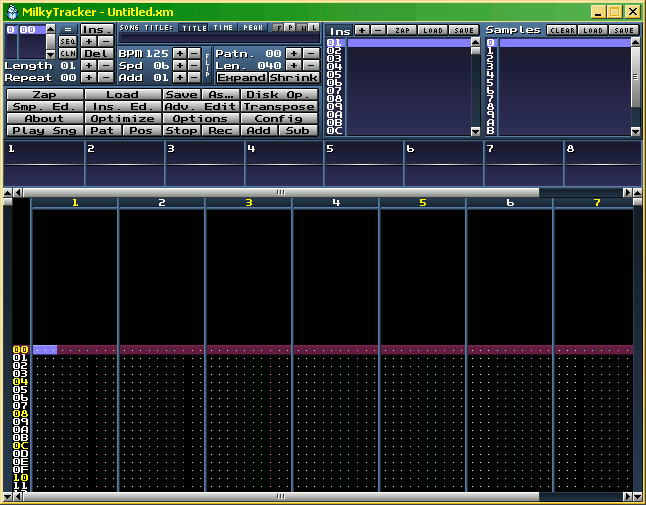
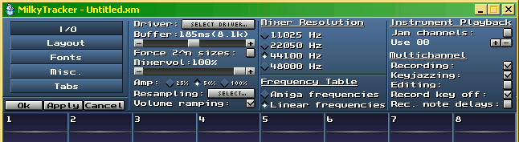
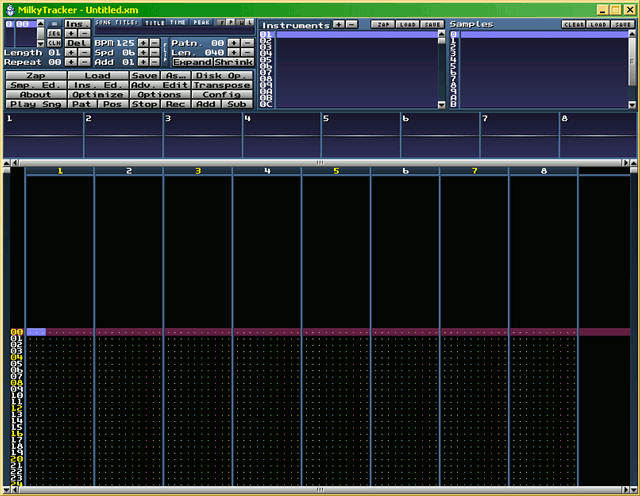

Welcome to the Milkytracker-Basics-Tutorial! (For Milkytracker Version 0.90.80)
You should decompress the Milkytracker Archive first, if you haven't done that yet.
For the latest version of Milkytracker, please have a look at: http://www.milkytracker.net - there you'll find resources, Help files, Videos, Pieces of Music, and ready to use instruments too.
After decompressing Milkytracker (short is 'Milky'), you can define a shortcut/link to it, if you like.
Okay, let's start. .
Please execute Milky, like you execute other programs too, or just click at the shortcut/link (twice). After the Loading process, you should see something like that:

Image: Standartscreen of Milkytracker
Okay, now Milky is started, but we need to configure it a little bit, to get the most out of it. Click with left Mousebutton on 'Config'. You should see this in the Menusection on the top:

Image: Overview-Menu - Milkytracker
Click at 'Layout'; you should see this:
Image: Layout Menu - Milkytracker
Please click now at '800x600' and the field near 'Hex count', so that it's empty.
Now, click 'Ok' and restart Milky, like told by the Dialog-Box from Milky (So that the changes will be made)

Image: Milkytracker - bigger version
Like you can see in the Image, Milky is now scaled up to 800*600 Pixels and the Numbers on the left are in dec. and not in hex.
Let's have a look at an Image, to see, what kind of sections we have in Milky:
Image: Milkytracker - Sections
The Menu with the Buttons is on the left near the Instrumentslist.
Let's load a Song into Milky, to see, what's possible with it.
Milky and other Trackers, that create .mod, .xm, .it, s3m, and so on, files, are creating a kind of mixture of Midi and Sample file. That means, that it stores Notes and Instruments ( + Samples) in one file; this makes the resulting music files, in most of the cases, smaller than MP3's.
Let's load a Song with a Click at 'Load' in the Menu. (If i tell you to click somewhere, i normally mean the left Mousebutton - if i mean the right Mousebutton, i'll tell that to you.)
You'll get a file-requester; please choose there the Song you wish to hear (e. g. downloaded from the Milkytracker-website) and after loading the Song, click at 'Play Sng' to start the Playback of the Song.
. Sounds good, eh?
Now you can load and playback Songs from other Sources, if you like. Some of the Songs play back in an endless Loop, some from begining to end or with a special loop point.
That was the Overview over Milkytracker. To read on, please click in our little Menu on top of this Text at 'Instruments and Samples' or just at: go on...